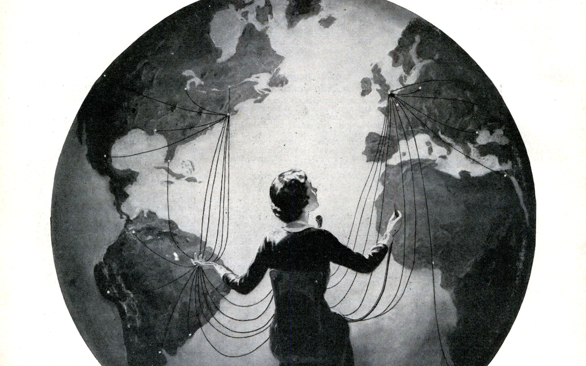

-
The Poetry Extension was founded and is curated by Natalya Anderson. It brings poets and dancers together from around the world through transatlantic readings and interviews.
Interviews
- Rebecca Goss
- Airea D. Matthews
- Clare Pollard
- Luke Kennard
- Karen McCarthy Woolf
- Pascale Petit
- Karolina Kuras
- Rachael Allen
- Anisa Tejpar
- Greta Hodgkinson
- Daisy Lafarge
- Mary Jean Chan
- Sarah Kabamba
- Juliane Okot Bitek
- Dwayne Morgan
- Jack Underwood
- Rachel Long
- Alex MacDonald
- Crispin Best
- Kathryn Maris
- Dani Couture
- Kaddy Benyon
- Soraya Peerbaye
- Canisia Lubrin
- Caroline Bird
- Sophie Collins
- Jane Yeh
- Rishi Dastidar
- Liz Berry
- Mona Arhsi
- Doyali Islam
- Amy Key
- Dane Swan
- Stevie Howell
- Liz Howard
- Wayne Holloway-Smith
Readings
- February 22nd 2018
- August 31st 2017
- March 30th 2017
- December 8th 2016
- August 31st 2016
- March 31st 2016
